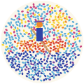

點進畫裡
三件事：挑日子和鐘點——畫的光會跟著換；挑一艘船或一塊草地，再決定幾個人；挑你的陽傘顏色——我們不調色，它會被拆成兩種純色的點，退後看才會變回你選的顏色。九十秒就能開票。
i哪一天、幾點
ii哪個位置、幾個人
在畫上點一個圓圈（或用下面的按鈕）。
iii你的陽傘
林沛萱：選一把傘，我告訴你它在畫裡會不會亮。

禮拜日扒船場Pê-tsûn · le dimanche à Pik-thâm碧潭西岸 3 號碼頭・週二至週日 09:00–18:00
圓圈是空位；點滿點的圈已經有人了。點畫面其他地方，那一塊會拆回它的顏料配方。
三件事：挑日子和鐘點——畫的光會跟著換；挑一艘船或一塊草地，再決定幾個人；挑你的陽傘顏色——我們不調色，它會被拆成兩種純色的點，退後看才會變回你選的顏色。九十秒就能開票。
在畫上點一個圓圈（或用下面的按鈕）。
林沛萱：選一把傘，我告訴你它在畫裡會不會亮。